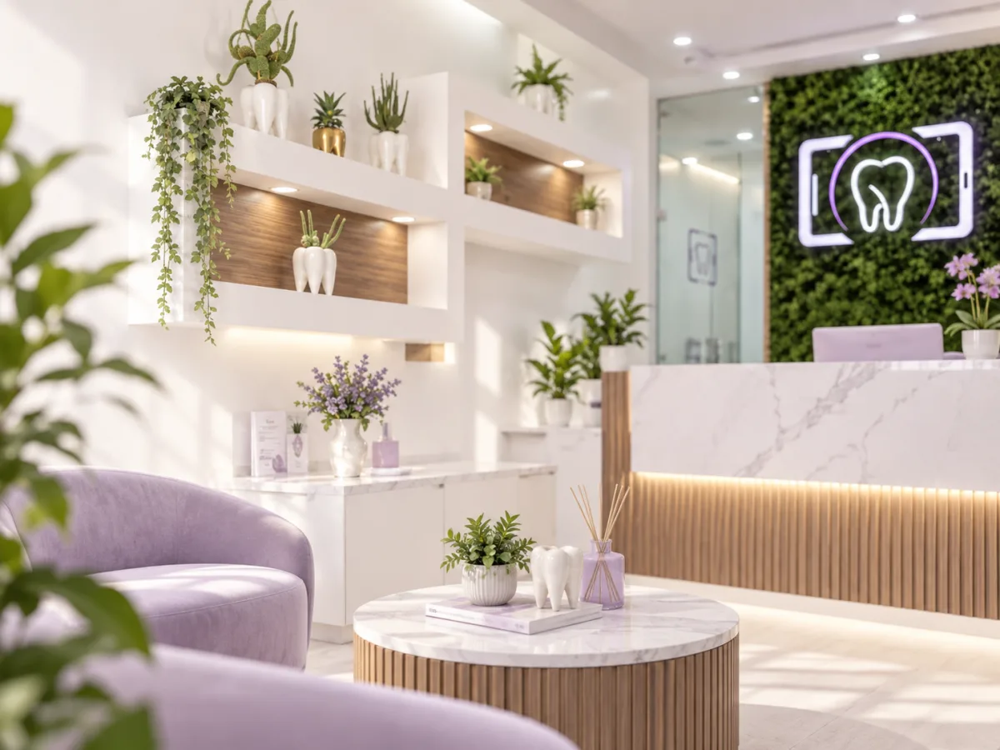
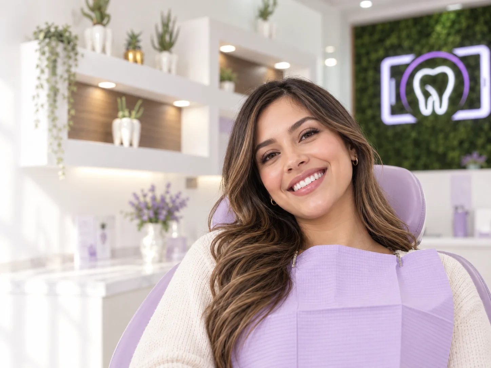

Página web
La persona elige su necesidad y deja una solicitud de valoración.
Estado: demo web activa
Propuesta digital para Selfie Dental
Una experiencia de captación que orienta al paciente, prepara el siguiente contacto y da a recepción una acción clara para continuar.
Así funciona
La propuesta convierte una solicitud en contexto útil para que el equipo sepa qué atender, por qué y cuál es el siguiente paso.
La persona elige su necesidad y deja una solicitud de valoración.
Estado: demo web activaSe prepara el mensaje de continuación con la información de la solicitud.
Estado: no conectadoRecepción ve prioridad, contexto y una acción concreta para avanzar.
Estado: local en este navegadorAlcance de esta propuesta: la web es una demo live; WhatsApp está propuesto y no conectado; el panel funciona como demo local con datos de ejemplo.
Limpieza dental · solicitud recibida hoy · 097 998 1122
Empieza por tu necesidad
No necesitas conocer el nombre técnico del tratamiento. Elige la opción que más se parezca a tu necesidad y desde ahí te guiamos.
Dra. Aibyl Guerrero
La propuesta pone a la clínica, a la doctora y a las preguntas iniciales al frente. Así, quien llega a la web entiende cómo solicitar una valoración y qué paso sigue.
Valoración clara
La página debe ayudar a orientar, sin reemplazar una valoración clínica. La demo plantea un recorrido donde cada persona entiende cómo solicitar atención y cuál es el siguiente paso.
Valoración estética y acompañamiento personalizado.
Alineación dental con seguimiento claro.
Prevención, higiene y mantenimiento.



CTA principal
Ubicación
Dirección: Juan de la Roca y Pje. 8, Ibarra, Imbabura. Referencia: Pilanquí, esquina Torres de Pilanquí, junto a Bell Stetic Spa.
En esta versión ya está incluida la sección de mapa para que no quede vacía la parte de ubicación.